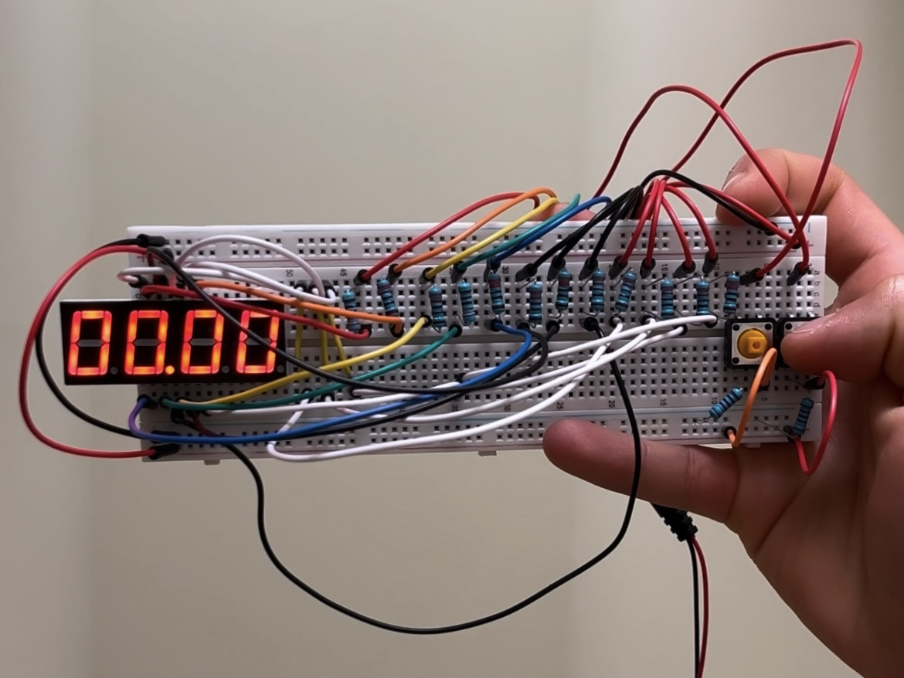
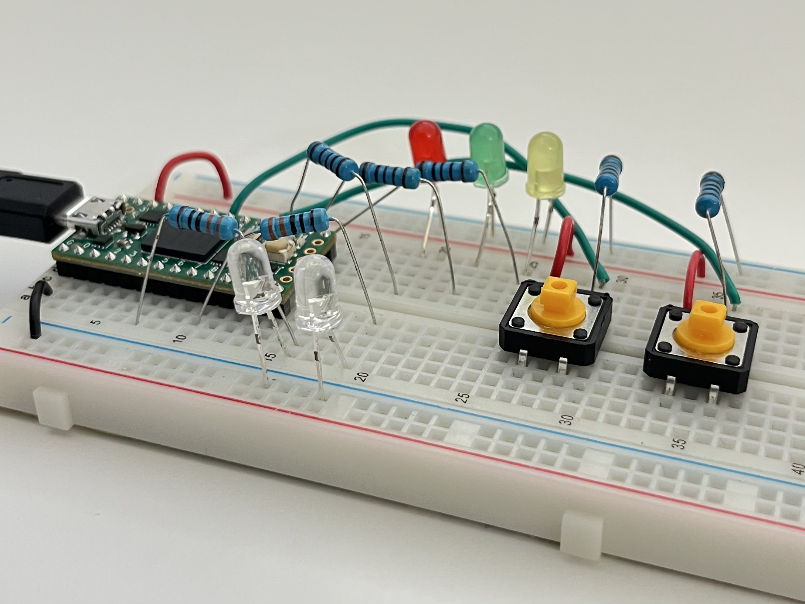
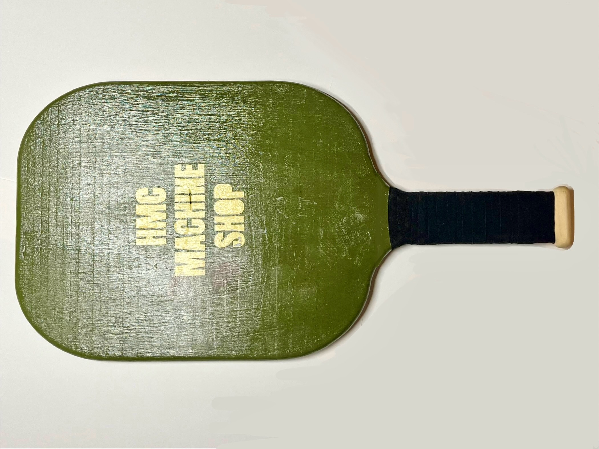
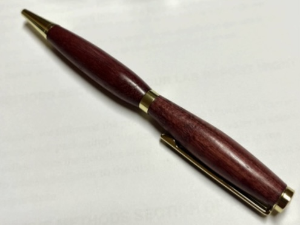

Personal Projects
Through a breadth and depth of hands-on personal projects, I’ve develop new and useful skills to broaden my engineering problem solving toolbox. I believe projects and experiments are the best way to learn for yourself what works and what doesn’t, and adjust as needed to keep moving foward. My projects bring me great satisfaction and I love putting in the time and effort to bringing my ideas to life. If they work, wonderful! And if they don’t turn out as expected, I take what I’ve learned and quickly and efficiently modify my methods until I reach my goal. Check out some of the projects I’ve worked on so far!
Electronics
Digital Stop Watch

I designed a stopwatch-style timer to record elapsed time using an Arduino UNO R3 microcontroller and a 5461BS 7-segment 4-digit display. The stopwatch was equipped with two buttons: one to play/pause and another to reset the time. I gained practice with programming concepts such as managing states, multiplexing, and debouncing.
Simon Says

Using a Teensy 4.0, I designed a game of Simon Says. A sequence is played on the white LEDs and players must match the order of the sequence with the buttons. An incorrect answers lights the red LED while a correct answer lights the green LED and increases the sequence length by 1. If the final sequence is played correctly, the yellow LED will flash indicating a win.
Manufacturing
Pickleball Paddle

I built a pickleball paddle for the 2025 Machine Shop proctor pickleball tournament! Measurements of an actual paddle were taken in order to set the correct dimensions of the sketch on the ShopBot CNC Router. I selected appropriate cutting paths and tab locations to ensure the paddles would be cut safely. After the paddle was cut, it was hand-sanded and painted. A laser cut stencil was used to to create precise lettering. Thank you to Ever Diaz-Ramos for your help and the Harvey Mudd Maker Space.
Ballpoint Pen

I made my own custom pen and learned to safely and effectively operate the wood lathe. The pen started out as a rectangular block of oak wood and using a series of gouges, I evenly rounded out the block’s edges. At a slower speed, I applied sandpaper at increasing grits to remove small pockets. Lastly, varish was applied to create the final finish. The pen shell and hardware was assembled using an arbor press. Thanks Brayden Hendrick for your guidance!
Cheese Knife

For Christmas, I made my family a set of custom utensils. I took inspiration from Wooden Utensils from the Bandsaw to make my cheese knife. I started by drawing profiles for each utensil on a sticker, then used the bandsaw to cut out the general shape on my piece of wood stock. The belt sanders were used to create smooth curves along the handle of each untensil. I then hand-sanded each piece to remove pockets and dunked them in mineral oil to make each utensil food-safe.